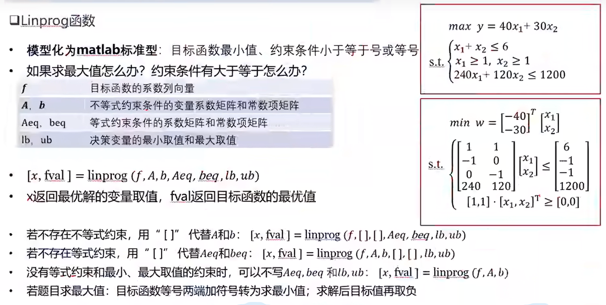

数模学习
数学建模学习
论文撰写
论文摘要
如果有必要数据，建议全部列出，列举不下的加上见附录数模
参考文献
直接利用知网自动生成的第一个
表格
使用三线表，表格居中
word内置AxMath和AxGlyph
Matlab学习
导入数据
优先选择表
绘图
选择很多，散点图、矩阵图、三维图等，也可以使用其他软件绘制，可以通过ECharts矢量图生成美化图片
数据预处理
清理缺失数据和离群数据
- 线性插值
- 平均值
- ……
算法学习
线性规划
要求：次数为一次
例如求总收益、总运费等
使用Linprog函数
1 | |

官方链接：求解线性规划问题 - MATLAB linprog - MathWorks 中国
例题——最优化投资（多目标线性规划）
- 基本假设
- 合理规划，简化问题
- 模型建立
- 决策变量
- 目标函数
- 约束条件
非线性规划
至少一个变量是非线性的
例如$x^2 , e^x$等都是非线性
使用fmincon函数
1 | |
$x_0$是决策变量的初始值，影响最终结果
nonlcon是非线性约束包括不等式和等式
常见求解收益率、病毒传播率、选址问题
nonlcon 是一个用户定义的函数，用于指定非线性约束条件。在非线性约束中，g 和 h 分别代表两种不同类型的约束：
g- 非线性不等式约束（Nonlinear Inequality Constraints）:- 这些约束必须小于或等于零（
g(x) ≤ 0）。 - 它们用于确保解满足某些条件，但并不要求这些条件严格成立。
- 这些约束必须小于或等于零（
h- 非线性等式约束（Nonlinear Equality Constraints）:- 这些约束必须等于零（
h(x) = 0）。 - 它们用于确保解严格满足某些条件。
- 这些约束必须等于零（
官方链接：寻找约束非线性多变量函数的最小值 - MATLAB fmincon - MathWorks 中国
文章：Matlab非线性规划之fmincon()函数_matlab fmincon-CSDN博客
多目标规划
首先必须合理衡量每个目标的完成情况
- 正负偏差变量——衡量每个目标的完成情况，负偏差变量越小越好
- 正偏差变量$d{_i ^+}= max\{f_i-d{_i ^0},0\}$,表示实际值超过目标值的部分
- 负偏差变量$d{_i ^-}= -max\{f_i-d{_i ^0},0\}$,表示实际值未达到目标值的部分
- 绝对约束和目标约束
- 绝对约束必须满足
- 目标约束允许加入正负偏差变量，等式中引入正负偏差系数
- 优先因子
- 给不同目标加上权重$P_k$
| 目标 | 意义 | 目标函数 |
|---|---|---|
| 不超过目标值 | 正偏差变量越小越好 | $min \ P_1 * d{_1 ^+}$ |
| 恰好达到目标值 | 正负偏差都尽量小 | $min \ P_2 * (d{_2 ^+}+d{_2 ^-})$ |
| 不少于目标值 | 负偏差变量越小越好 | $min \ P_3 * d{_3^-}$ |
fgoalattain函数或者Lingo函数求解
优化变量学习
最短路径
1 | |
sparse函数——生成稀疏矩阵
- 内部包含三个矩阵
- 起点
- 终点
- 权值
biograph生成图，view显示该图
最小生成树
1 | |
灰色预测GM（1，1）模型
特点：数据少，看不出来规律
学习链接：GM（1,1）灰色预测模型——详细过程与python实现_灰色预测模型gm(1,1)-CSDN博客
- GM：Grey Model灰色模型
- (1,1)：只含有各一个变量的一阶微分方程模型——对应通解为$e^x + C$形式，具体查看淑芬的同届表达形式
由于数据是离散的，我们有：
为了消除随机性，我们引入
$\delta = 0.5$即为前后时刻的均值
微分方程改写为
矩阵表示为
最小二乘法
目的：使得离差平方和最小，即$minQ = \sum(x^{(0)} - \hat{x}^{(0)})^2$
通解为
级比检验
$x^{(1)}$ 的极比检验满足$\sigma \in(1,1.5]$当然也可以看占比
模型评价
残差检验
- 绝对残差
相对残差 $\varepsilon _r\left(k\right)=\frac{X^{\left(0\right)}\left(k\right)-{\hat{X}}^{\left(0\right)}\left(k\right)}{X^{\left(0\right)}\left(k\right)}$
平均相对残差 $\bar{\varepsilon}_r = \frac{1}{n-1} \sum_{k=2}^{n} |\varepsilon _r\left(k\right)|$
级比偏差检验
原始数据比 $\sigma(k)=\frac{x^{(0)}(k)}{x^{(0)}(k-1)}(k=2,3, \ldots, n)$
再预测发展系数计算级比偏差和平均极比偏差
层次分析法（AHP）
用于面对多种方案的决策问题
将问题条理化、层次化，将问题分为最高层、中间层、最底层
加权打分
构造判断矩阵
- 依次对变量进行两两比较得到完整的判断矩阵
- 一致性检验
- 比较$a_{ij}$与$a_{ik}*a_{kj}$是否相等
引入正互反矩阵和一致矩阵
一致矩阵
一致矩阵特征值为n，其余特征值均为0，特征向量
$k\left[\begin{array}{llll}\frac{1}{a_{11}}, & \frac{1}{a_{12}}, & \ldots, & \frac{1}{a_{1 n}}\end{array}\right]^T$
特征值与特征向量基础：【数学基础】矩阵的特征向量、特征值及其含义_矩阵特征值和特征向量-CSDN博客
一致性检验步骤
- 计算一致性指标CI
- 查找随机一致性指标RI
- 计算一致性指标比例CR
当$CR < 0.10$时，认为判断矩阵的一致性是可以接受的，否则应当对判断矩阵作适当修正.
- 计算权重向量
计算方法
- 算术平均法
- 几何平均法
- 特征向量法
根据最大特征值求出特征向量，归一化特征向量得到权重
- 回归分析法
Topsis算法
原始矩阵正向化
将所有指标类型统一转化为极大型指标
| 指标名称 | 指标特点 | 例子 |
|---|---|---|
| 极大型（效益型）指标 | 越大越好 | 成绩、GDP |
| 极小型（成本型）指标 | 越小越好 | 脾气、费用 |
| 中间型 | 越接近越好 | PH值 |
| 区间型 | 落在某个区间最好 | 体温、BMI |
| 指标 | 公式 | ||||
|---|---|---|---|---|---|
| 极大型（效益型）指标 | |||||
| 极小型（成本型）指标 | $\hat{x}=max-x$，max为指标最大值 | ||||
| 中间型 | $M=max\{ | x_i - x_{best} | \},\hat{x}=1-\frac{ | x_i - x_{best} | }{M}$ |
| 中间型 | $M=\max \left\{a-\min \left\{x_i\right\}, \max \left\{x_i\right\}-b\right\}, \quad \tilde{x}_i=\left\{\begin{array}{c}1-\frac{a-x_i}{M}, x_ib\end{array}\right.$ |
正向化矩阵标准化
和层次分析法中类似